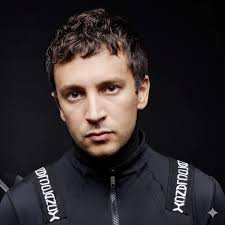
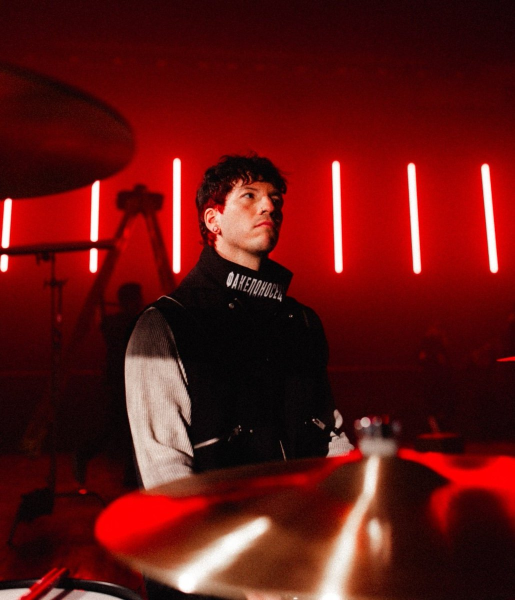

Twenty One Pilots é uma dupla formada em Columbus, Ohio, em 2009. Composta por Tyler Joseph (vocal, piano) e Josh Dun (bateria).

Vocal, Piano, ukulele e baixo. Fundador da banda e principal compositor. Nascido em 1 de dezembro de 1988, em Columbus, Ohio.

Bateria e trompete. Entrou para a banda em 2011. Conhecido pelas performances energéticas no palco. Nascido em 18 de junho de 1988.